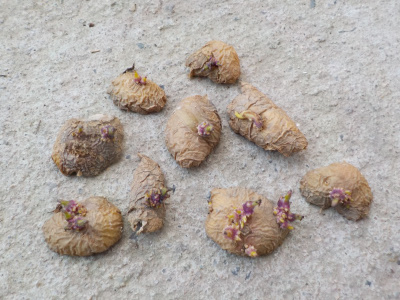
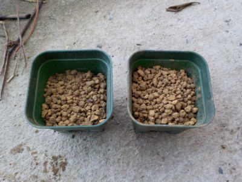
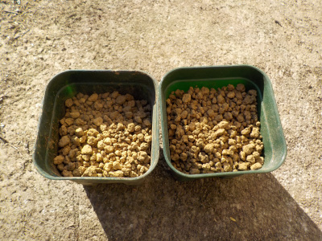
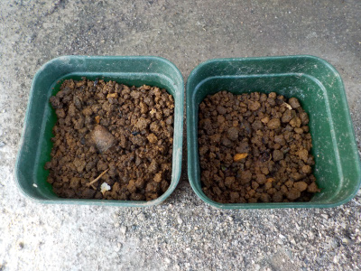
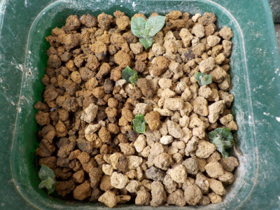
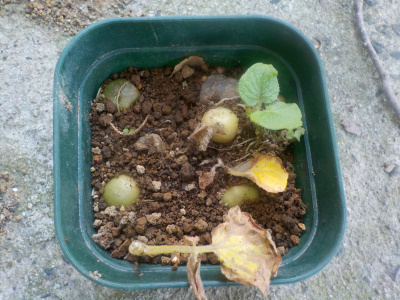
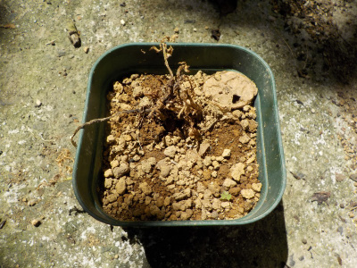

じゃがいもの皮からじゃがいもの苗を作ろうと思っています。
更新日 : 2023/01/29

芽が出たジャガイモは芽を取り除いて食べるんですが、芽を捨てないで土に植えてみることにしました。
じゃがいもの種芋って、芋が育って収獲した時にも残ってたりしますよね。なので芋が育つのに、芋の栄養分ってあんまりいらないんじゃないかと思います。
芽とちょっとの量の芋があれば成長して芋が収獲出来るんじゃないかと思ったので試してみます。

カビが生えるかもしれないので、ちょっと乾燥させてシワシワになった皮を1つのポットに4つとか5つ入れて水をやりました。
にょきにょきっと芽が出るといいな。
じゃがいもの皮を2ポット追加。
更新日 : 2023/02/05

前回植えたものはまだ何の変化も見えません。
ちゃんと育つか分かりませんが、更に2つ追加しました。
じゃがいもの皮は失敗しました。
更新日 : 2023/03/19

じゃがいのの皮からジャガイモを育てようとしましたが、芽が育ちませんでした。
水やりの回数が少なかったので、乾燥し過ぎで枯れたと思います。
ジャガイモの皮がまだ生きていました。
更新日 : 2023/04/15

枯れたと思っていたじゃがいもの皮ですが、小さな芽が出ました。
皮だけでイモの養分が少ない分、成長が遅かったのかもしれないです。
今このサイズの芽を育てて、夏までに収獲出来るかは謎ですね。
皮から育てたジャガイモに小さなジャガイモが出来ていました。
更新日 : 2023/06/04

成長が遅いのでほったらかしにしていたジャガイモの皮栽培です。
気温が上昇して苗が枯れた後に、ミニじゃがいもが出来ていました。
小さい苗でもちゃんと小さいですけどジャガイモが出来るんですね。この緑のジャガイモは食べれないし、小さいので種芋にも出来ないな。
夏の暑さでジャガイモが枯れました。
更新日 : 2023/08/05

日差しの弱い涼しい場所だったら大丈夫かなと思ったんですが、ダメでした。
無理でしたか。